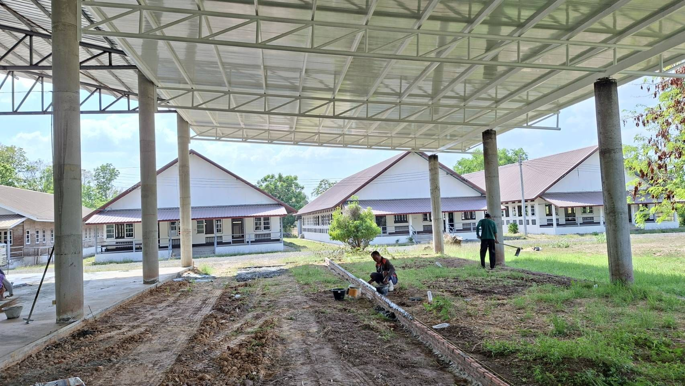
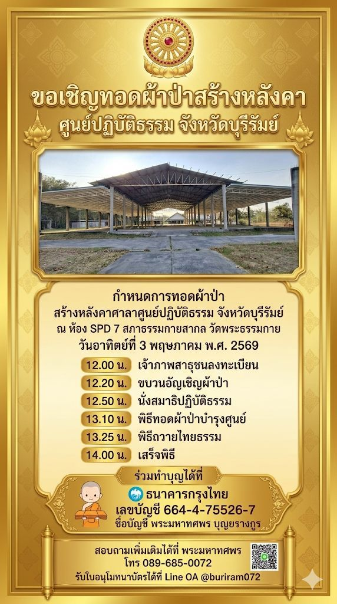
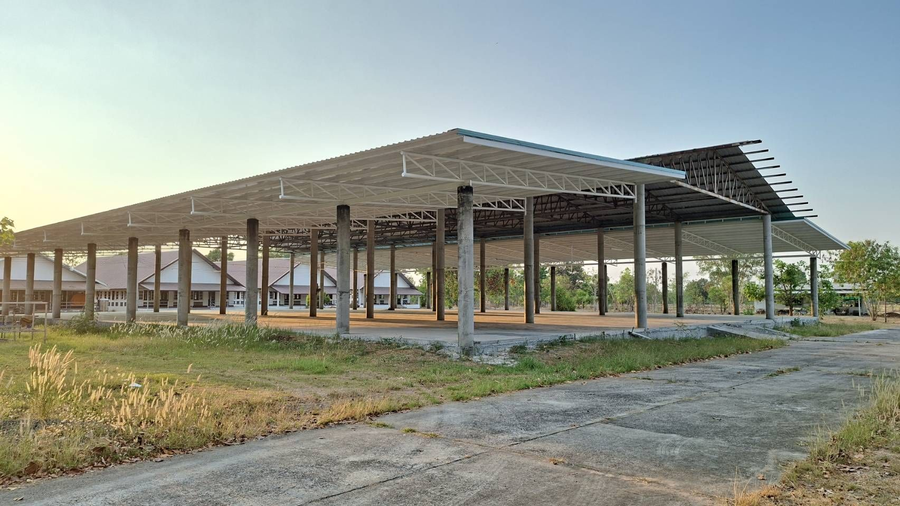
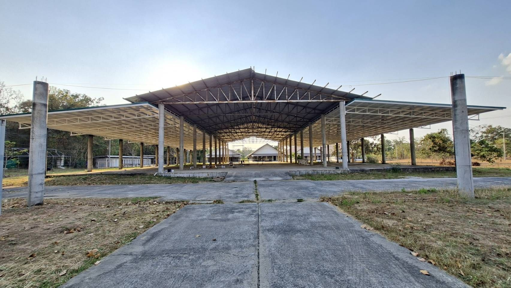
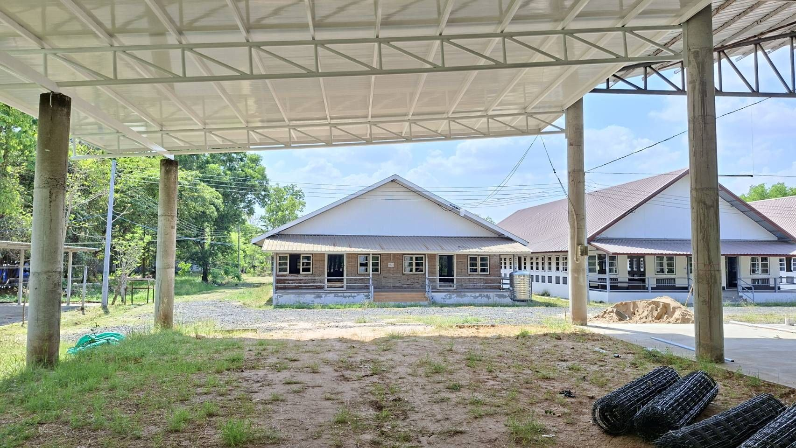
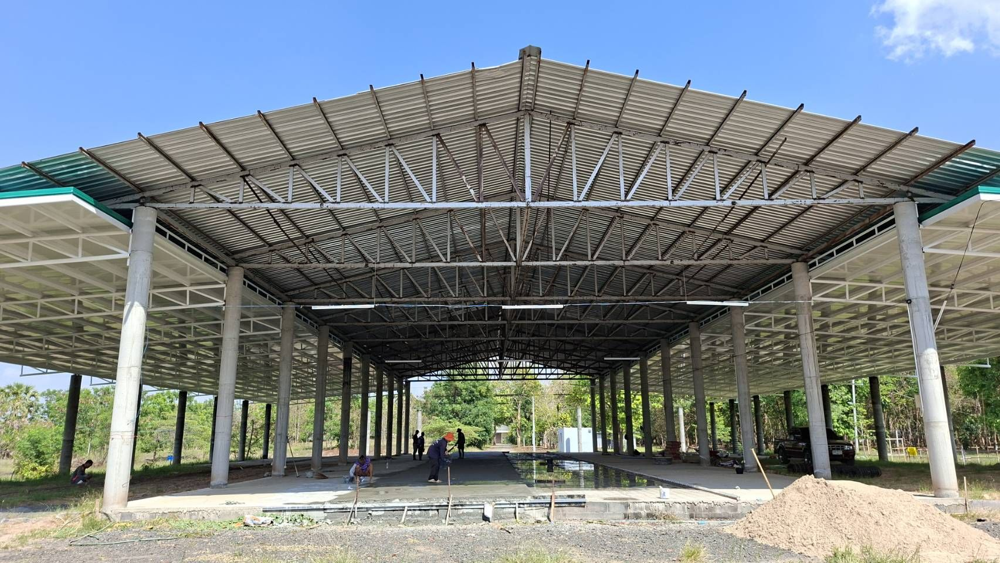
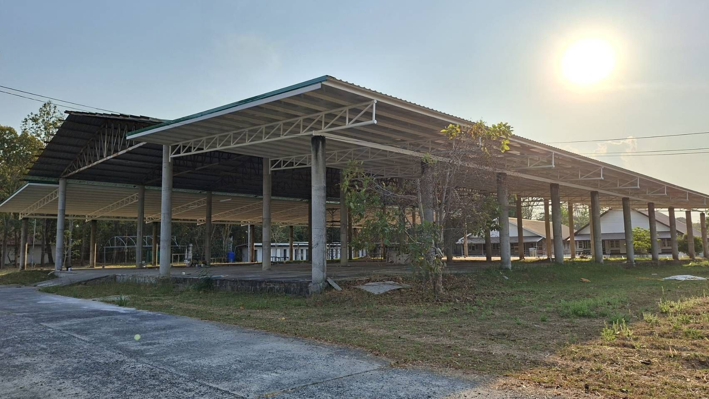

เจ้าภาพสาธุชนลงทะเบียน
แรงศรัทธาที่รวมเป็นหนึ่ง
ขอเชิญร่วมสร้างสถานที่แห่งการปฏิบัติธรรม
โครงการนี้จัดขึ้นเพื่อสมทบการสร้างหลังคาศาลาศูนย์ปฏิบัติธรรม จังหวัดบุรีรัมย์ ให้เป็นสถานที่รองรับการปฏิบัติธรรม การอบรมคุณธรรม และกิจกรรมบุญของสาธุชนในพื้นที่อย่างสง่างามและมั่นคง
ทุกแรงบุญของหลวงพี่และสาธุชน จะร่วมกันต่อยอดสถานที่แห่งนี้ให้เป็นประโยชน์ต่อพระพุทธศาสนาและผู้คนอีกมากในอนาคต
กำหนดการวันงาน
วันอาทิตย์ที่ 3 พฤษภาคม พ.ศ. 2569
ขบวนอัญเชิญผ้าป่า
นั่งสมาธิปฏิบัติธรรม
พิธีทอดผ้าป่าบำรุงศูนย์
พิธีถวายไทยธรรม
เสร็จพิธี
ร่วมทำบุญได้ทันที
ข้อมูลบัญชีสำหรับร่วมบุญ
ธนาคารกรุงไทย
เลขบัญชี 664-4-75526-7
ชื่อบัญชี พระมหาทศพร บุญยรางกูร

ภาพสถานที่จริง
บรรยากาศศูนย์ปฏิบัติธรรม จังหวัดบุรีรัมย์





